Personajes
-
.jpg)
Monkey D. Luffy
Capitán de los Piratas de Sombrero de Paja. Su objetivo es encontrar el One Piece y convertirse en el Rey de los Piratas. -
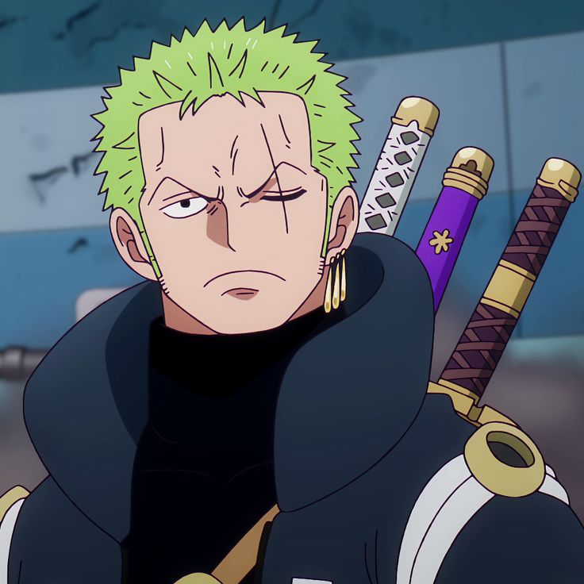
Roronoa Zoro
Espadachín de la tripulación, con el sueño de ser el mejor espadachín del mundo. -
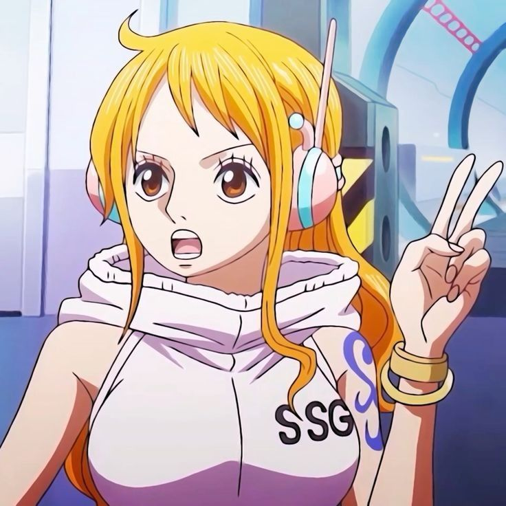
Nami
Navegante de la tripulación, quiere crear el mapa completo del mundo. -
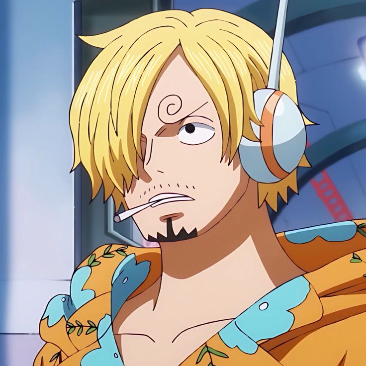
Sanji
Cocinero de los Piratas de Sombrero de Paja, sueña con encontrar el All Blue. -
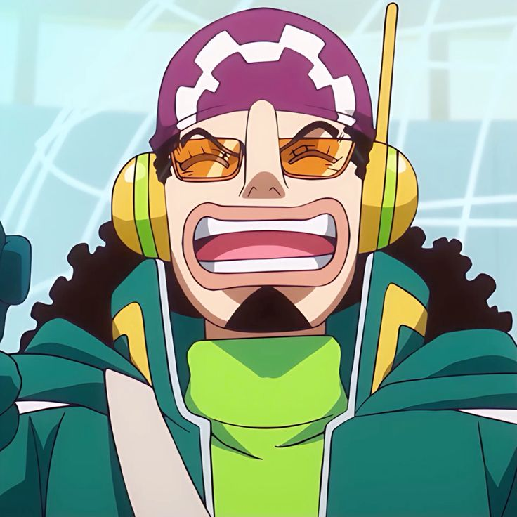
Usopp
Francotirador del equipo, con el sueño de ser un valiente guerrero del mar. -
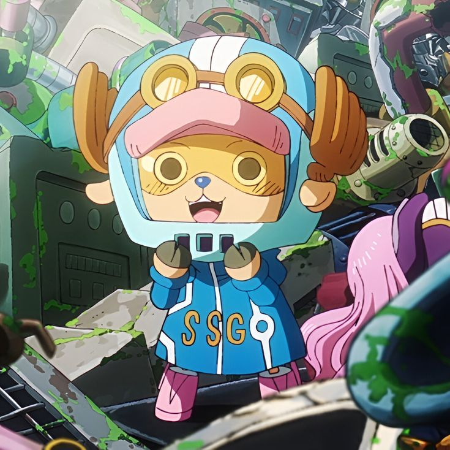
Tony Tony Chopper
Doctor de la tripulación, desea convertirse en un gran médico capaz de curar cualquier enfermedad. -
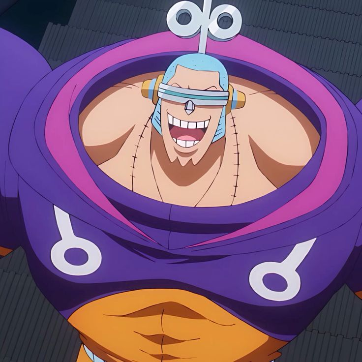
Franky
Carpintero de la tripulación, responsable de construir el Thousand Sunny. -
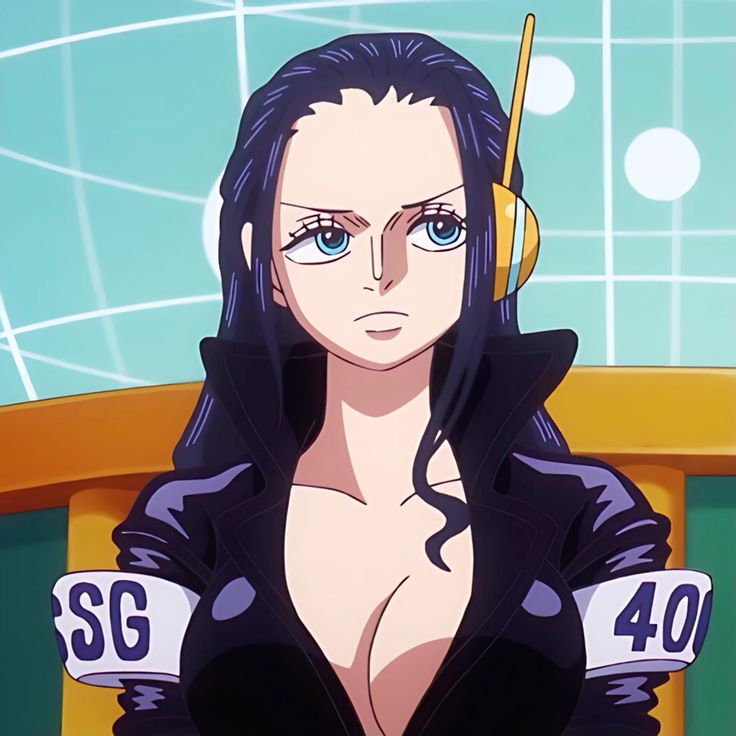
Nico Robin
Arqueóloga de la tripulación, busca descubrir la historia perdida del siglo vacío. -
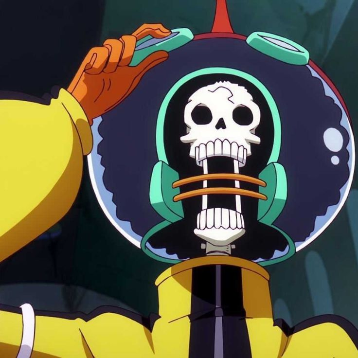
Brook
Músico de la tripulación, es un esqueleto vivo que quiere reunirse con Laboon. -
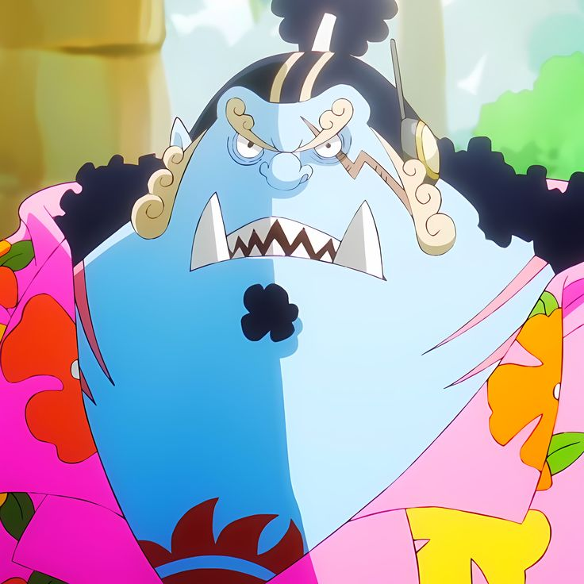
Jimbei
Ex-shichibukai y timonel de los Piratas de Sombrero de Paja, lucha por la igualdad entre humanos y tritones. -
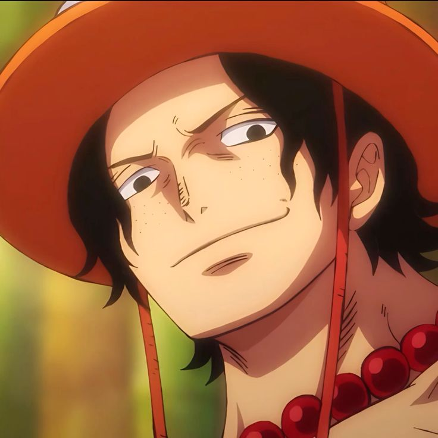
Portgas D. Ace
Hermano de Luffy y Comandante de los Piratas de Barbablanca. Tenía la habilidad de controlar el fuego. -
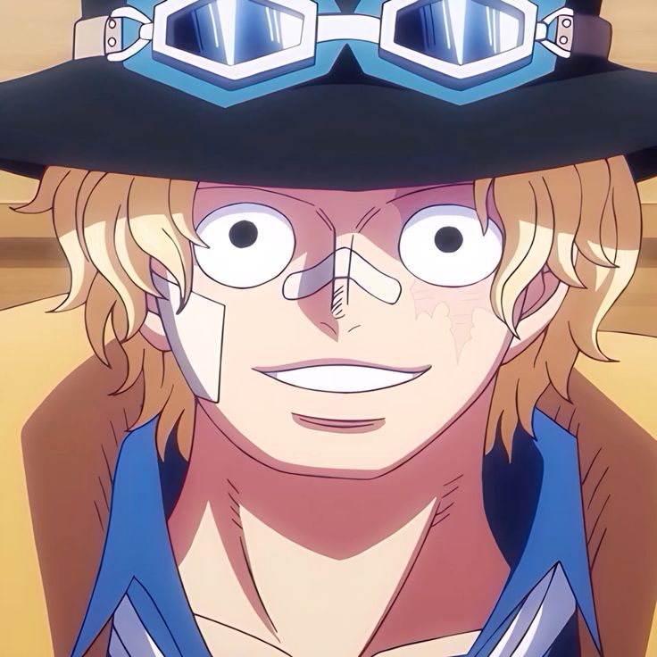
Sabo
Hermano adoptivo de Luffy y Ace, segundo al mando del Ejército Revolucionario. -
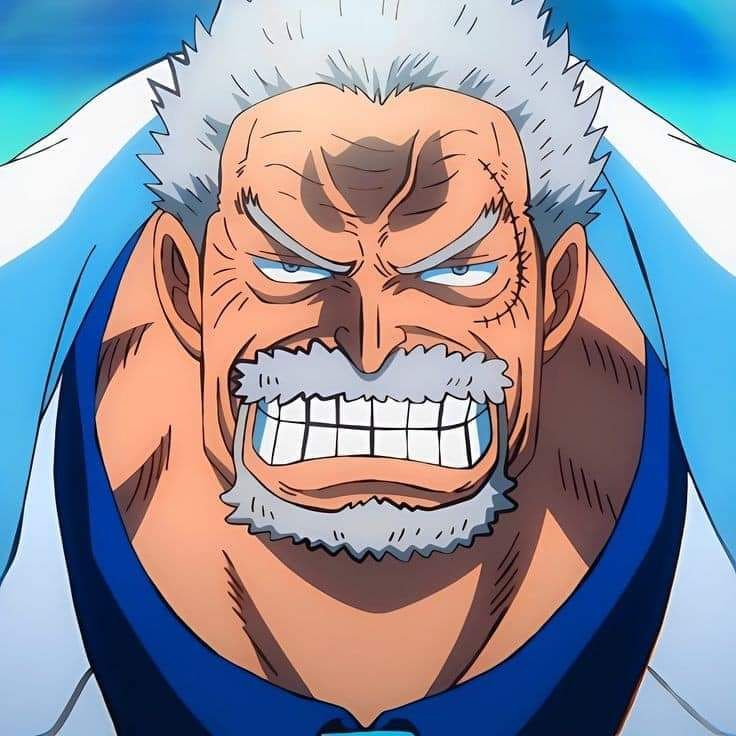
Monkey D. Garp
Vicealmirante de la Marina y abuelo de Luffy. Conocido como el "Héroe de la Marina". -
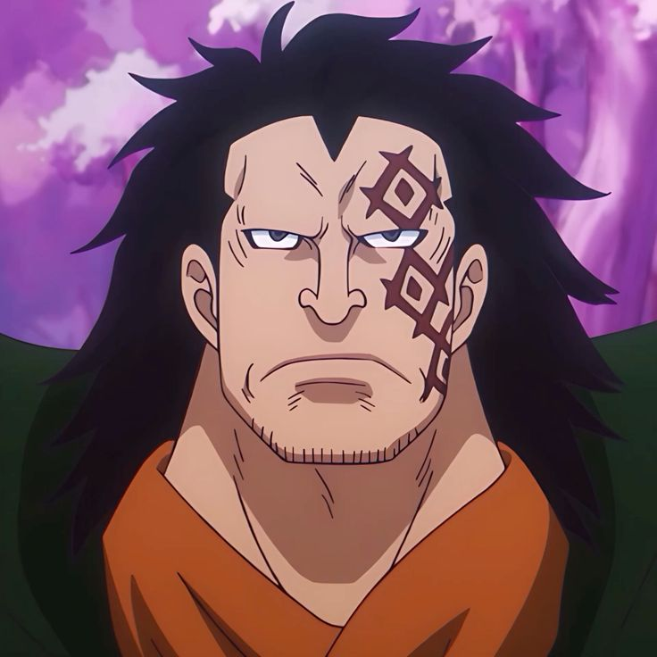
Monkey D. Dragon
Líder del Ejército Revolucionario y padre de Luffy. -
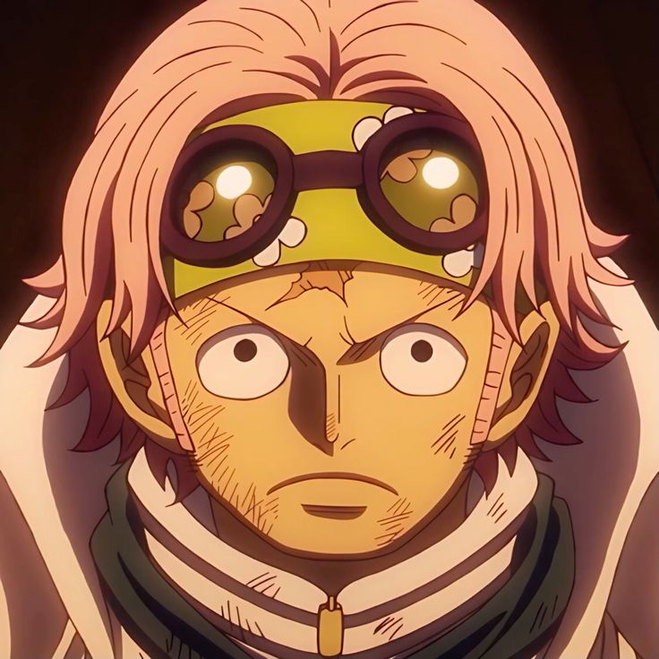
Koby
Oficial de la Marina y antiguo amigo de Luffy. Sueña con ser un almirante de la Marina. -
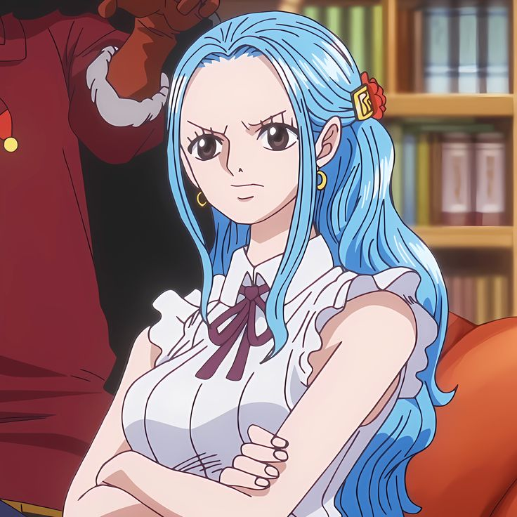
Nefertari Vivi
Princesa de Arabasta y aliada de los Piratas de Sombrero de Paja. -
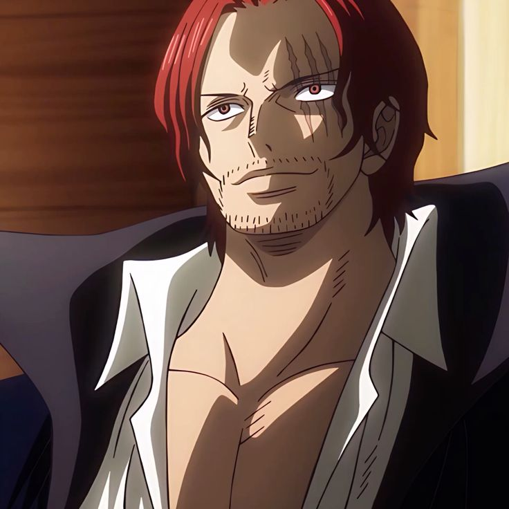
Shanks
Uno de los Cuatro Emperadores y antiguo miembro de la tripulación de Gol D. Roger.